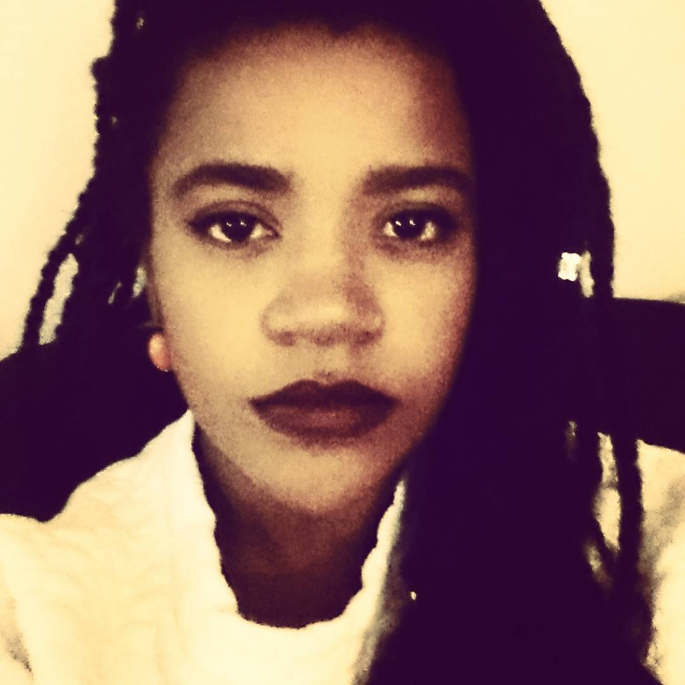
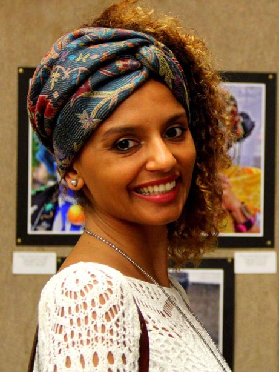

Funções / Figurino
As informações de cada perfil são de responsabilidade das profissionais.
Você quer conhecer profissionais de quais estados?
Marcar/Desmarcar todos
CARREGANDO ...
Eliza Neves da Luz (RJ)
Eliza Neves da Luz
33 anos | Rio de Janeiro (RJ)
elizaneves@gmail.com
Estou iniciando agora na área do audiovisual e descobri que esta é a minha verdadeira paixão. Acabei de finalizar o primeiro curso de produção audiovisual e a única experiência que consegui até agora foi uma oportunidade de figurinista. Sou formada em jornalismo há 5 anos e atuo nesta área há sete anos. Porém, estou desempregada há 8 meses e por isso resolvi seguir uma nova carreira, entrando assim para o mundo audiovisual.
Outras atividades de Eliza Neves da Luz
Cenografia |
Preparação de elenco |
Produção
Amostra de vídeo
Erica Ribeiro (SP)
Erica Ribeiro
29 anos | São Paulo (SP)
eraribeiro@gmail.com
Artísta multifuncional.
http://eraribeiro.blogspot.com
Outras atividades de Erica Ribeiro
Atuação |
Cenografia |
Direção de Arte |
Dublagem |
Locução |
Maquiagem |
Oficinas e cursos livres |
Preparação de Elenco
Amostra de vídeo
 Jamila Terra (DF)
Jamila Terra (DF)
Jamila Terra
Guará (DF)
jamila.oliveiraterra@gmail.com
Eu me chamo Jamila Terra, sou graduada em Cinema e mídias digitais no Distrito Federal. Dentro da faculdade eu tive a oportunidade de estar dentro de vários sets em várias funções distintas, aonde consegui ter um espaço e algum nível de capacitação para fazer uma co-produção/co-direção com um outro diretor, além de realizar o derradeiro filme. Ainda que eu seja uma recém-formada me considero em uma crescente evolução profissional em relação ao audiovisual.
Outras atividades de Jamila Terra
Assistência de direção |
Cenografia |
Cineclubismo |
Continuidade |
Direção |
Direção de arte |
Dublagem |
Edição |
Gerência de mídia |
Preparação de elenco |
Produção |
Roteiro
Amostra de vídeo
 Jessica Rezino (RJ)
Jessica Rezino (RJ)
Jessica Rezino
24 anos | Rio de Janeiro (RJ)
jessicarezino@hotmail.com
Trabalho como figurinista, assistente de figurino e/ou aderecista. Me forma no final deste ano em figurino pela faculdade SENAI CETIQT. Tenho experiência com espetáculos teatrais, carnaval, cinema e publicidade.
Amostra de vídeo
 Lia Letícia (PE)
Lia Letícia (PE)
Lia Letícia
41 anos | Recife (PE)
lia.leticia@gmail.com
Além de escrever e dirigir seus próprios filmes, trabalha como diretora de arte. É educadora no projeto de educação audiovisual para crianças Escola Engenho e no Tardes de Quintal/Recife. Também é curadora e coordena o Cinecão, plataforma de exibição de trabalhos hibrídos em audiovisual, além de projetos independentes de arte na Maumau|Recife.
https://www.youtube.com/channel/UC3V5nfblgaqKdKy-XZj3ymA?view_as=public
Outras atividades de Lia Letícia
Cenografia |
Cineclubismo |
Coordenação de projeto |
Direção |
Direção de arte |
Edição |
Oficinas e cursos livres
|
Pesquisa e desenvolvimento |
Produção |
Programação e curadoria |
Roteiro
Amostra de vídeo
 Lidia dos Anjos (CE)
Lidia dos Anjos (CE)
Lidia dos Anjos
30 anos | Fortaleza (CE)
liddya1@gmail.com
Atriz , graduanda em Teatro pela UFC. Figurinista e costureira. Na Cia Cearense de Molecagem atuei em seus espetáculos infantis. Participei de espetáculos como Cale-se, com o Seres de Teatro, grupo que ainda atuo. Experimento I, foi trabalho totalmente autoral do grupo ETIPI do qual fui fundadora em 2013. Outros espetáculos: Disfarça, meu bem; Cidade sem Nome, etc. Performances: Carandiru pra Quem?;Bandido bom é Bandido Morto, Pátria Amada com Margens Urbanas ( grupo de intervenção que sou membro) Figurino: Disfarça, Meu bem; Cidade sem nome; Experimento I, Cale-se. Figurino e Arte em curtas Salto 15, VS EX SR tristeza com o Coletivo Descabelo. Preparação de elenco: Curta, Iracema.
Outras atividades de Lidia dos Anjos
Assistência de direção |
Atuação |
Direção de arte |
Oficinas e cursos livres |
Pesquisa e desenvolvimento |
Preparação de elenco |
Roteiro
Amostra de vídeo
 Luciana Oliveira (SE)
Luciana Oliveira (SE)
Luciana Oliveira
26 anos | Aracaju (SE)
luoliveira.vieira@gmail.com
Cineasta. Graduada em Audiovisual e Mestranda em Cinema pela Universidade Federal de Sergipe. Pesquisa o cinema de autorrepresentação realizado por mulheres negras atualmente no Brasil.
Outras atividades de Luciana Oliveira
Direção |
Produção
Amostra de vídeo
 Marina Kerber (RS/SP)
Marina Kerber (RS/SP)
Marina Kerber
25 anos | Porto Alegre (RS) e São Paulo (SP)
marinatkerber@gmail.com
Mestra em Meios e Processos Audiovisuais na USP. Bacharel em Realização Audiovisual pela UNISINOS. Tem experiência profissional em Cinema, principalmente, como diretora, diretora de arte, figurinista e animadora, tendo experiência em curta-metragens, longa-metragens e videoclipes. Já participou de festivais nacionais e internacionais de cinema, principalmente direcionados às técnicas de animação (Upto3/Canadá, Monstra Festival/Portugal) e ganhou prêmios em festivais como o Festival do Minuto (Recheio de Tinta, Pequena Porção vermelha e Martina) e o 1º Festival Luz de Cinema Latino-americano (Balão Selvagem).
http://be.net/marinakerber
Outras atividades de Marina Kerber
Animação |
Atuação |
Direção |
Direção de arte |
Fotografia still
Amostra de vídeo
Priscila Oliveira (SP)
Priscila Oliveira
28 anos | Valinhos (SP)
priscifch@gmail.com
Sou formada em Ciências Sociais e Midialogia, pesquiso direção de criança para cinema no curso Mestrado em Artes da Cena. Minha formação e experiências estão voltadas para roteiro e direção, mas gosto de ampliar meus conhecimentos teóricos e práticos em outras áreas do audiovisual. Também tenho interesse em trabalhos que envolvam o negro e a mulher no cinema (na frente e atrás da câmera), principalmente em relação à construção de personagens.
https://www.facebook.com/ameiavista
Outras atividades de Priscila Oliveira
Assistência de Direção |
Direção |
Ensino superior |
Fotografia Still |
Gerência de Mídia |
Oficinas e cursos livres |
Pesquisa e desenvolvimento |
Preparação de Elenco |
Produção |
Programação e curadoria |
Roteiro
Amostra de vídeo
Thuanny Bruno Rodrigues Paes (SC)
Thuanny Bruno Rodrigues Paes
22 anos | Florianópolis (SC)
thuannypaess@gmail.com
Thuanny Paes é atriz, militante e estudante cotista do curso de Licenciatura em Teatro da Universidade do Estado de Santa Catarina (UDESC). Entrou no então projeto de extensão Coletivo NEGA onde participou como bolsista por dois anos. Hoje é atriz e produtora do grupo que está no quinto consecutivo apresentando a performance Preta-à-Port Preta-à-Porter. e atua no projeto Diversidade em Escolas Públicas e EJAS nas redes municipais de São José São José e é menbro do MNU Jovem (Movimento Negro Unificado). Esse ano criou um canal no youtube pra falar sobre Cultura e Arte Negra e e pesquisa de forma livre as áreas de direção e roteiro audiovisual.
Outras atividades de Thuanny Bruno Rodrigues Paes
Captação de recursos |
Cenografia |
Coordenação de projeto |
Direção
|
Direção de arte |
Dublagem |
Preparação de elenco |
Produção executiva |
Roteiro
 Ticiane Simões (AL)
Ticiane Simões (AL)
Ticiane Simões
33 anos | Maceió (AL)
ticiane.santana@hotmail.com
Sou atriz em Alagoas, portanto necessito exercer várias outras funções para sobreviver. Sou negra e indígena, embora admita não ter um aprofundamento de minha árvore genealógica. Sou "multifacetaria", inquieta e guerreira. Já fiz, e faço ainda, muitos trabalhos para o teatro e nos últimos anos venho me permitindo descobrir o cinema. Bem, sempre é mais fácil falar de um personagem que de mim...
http://m.facebook.com/ticiane.simoes
Outras atividades de Ticiane Simões
Atuação |
Continuidade |
Direção |
Direção de Arte |
Dublagem |
Locução |
Maquiagem |
Oficinas e cursos livres |
Pesquisa e desenvolvimento |
Preparação de Elenco |
Produção |
Roteiro
Amostra de vídeo
 Waleska Brito Silva Santos (SP)
Waleska Brito Silva Santos (SP)
Waleska Brito Silva Santos
23 anos | São Paulo (SP)
waleska.bbrito@gmail.com
Sou recém formada pela Universidade Metodista de São Paulo, sou bacharel em comunicação social com ênfase em Rádio, TV e Internet. Possuo experiência em produção e edição. Trabalhei para a Somos Educação (antiga Abril Educação) da qual fiz parte do projeto Apprendi! que visa conteúdo audiovisual para escolas do país inteiro. Como trabalhos acadêmicos já realizei edição e direção de arte.